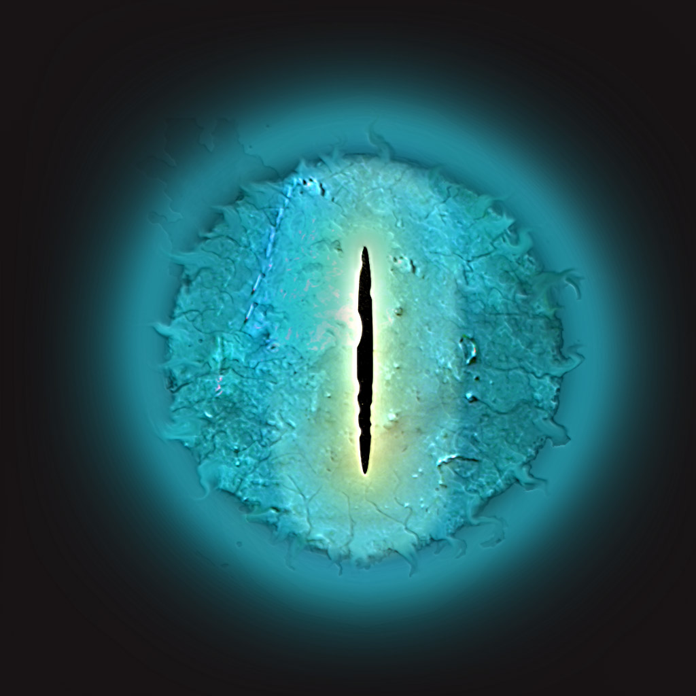
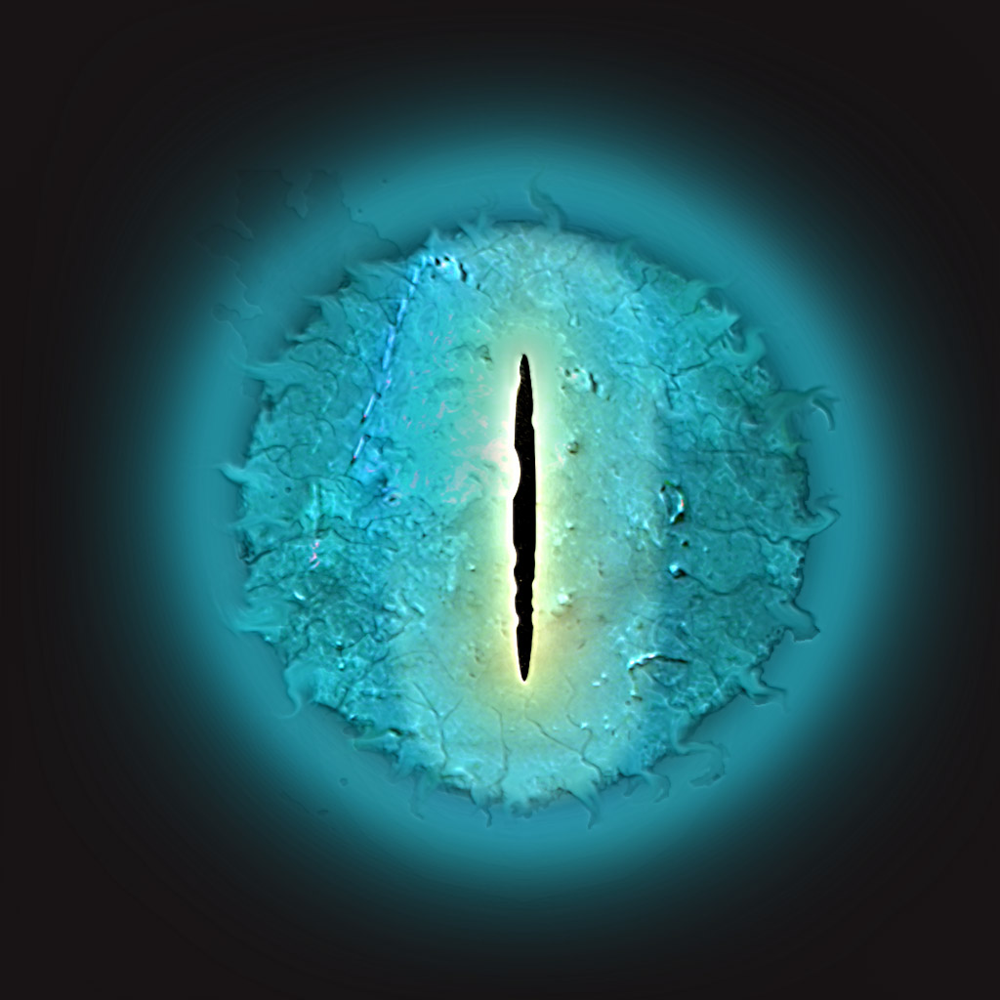

<

<
asteroids
Score: 0
Shields: 3
GAME OVER
Your score: 0
Controls & Rules
Use w, a, s, d to control the direction to look in. Use i and k to control thrust. Press spacebar to fire. 500 points are awarded for shooting a UFO, 100 points for hitting an asteroid. Running into an object decreases your shields by 1. If you shields fall to 0, the game is over and you can start again.